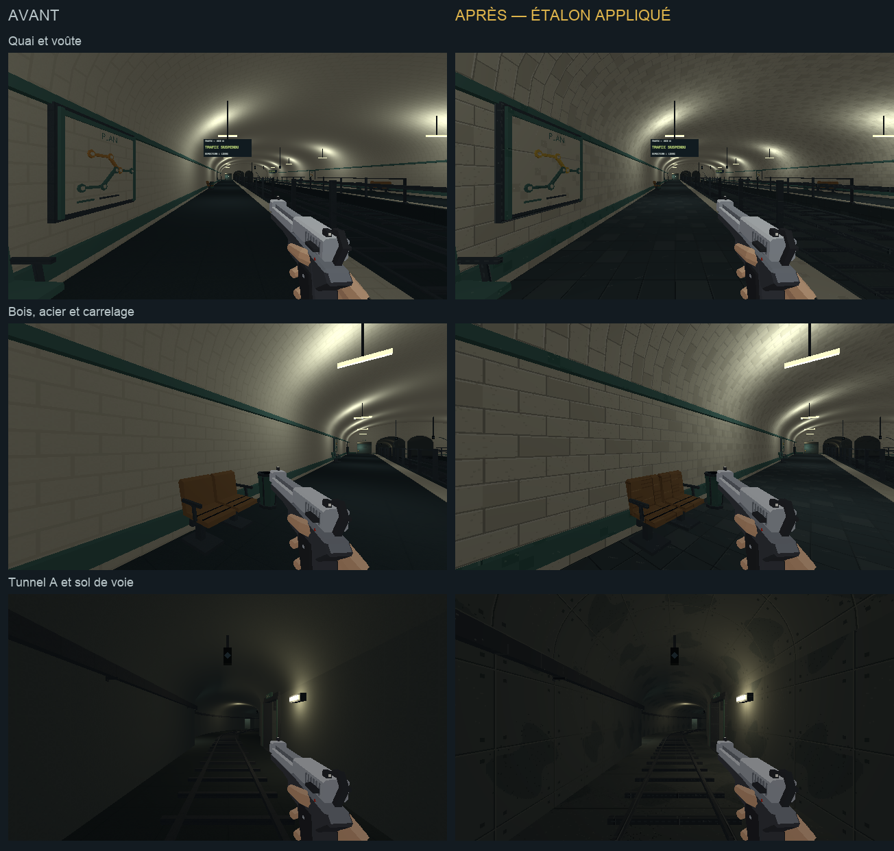
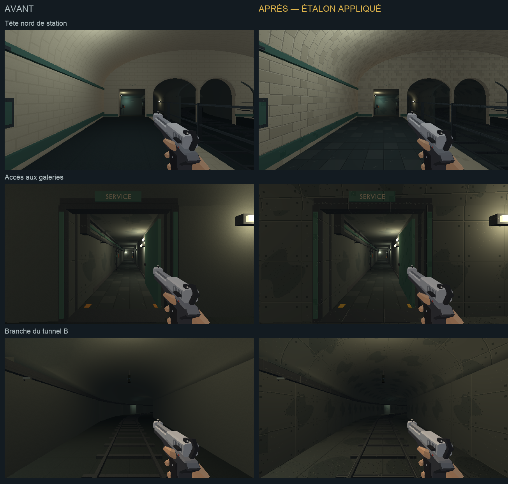

PROJET CASSANDRE · HARMONISATION · ÉTAPE 2
Quais et tunnels du métro
Carrelage ivoire, sol des quais, béton des tunnels et mobilier dans la continuité de l’étalon approuvé. Les voies gardent leur sol de béton industriel et les bandes de sécurité leur peinture.
Étalon approuvé · Charte commune · Compte rendu de cette passe · Passe suivante : billetterie et descente
Chargement du métro…
Les ennemis sont neutralisés et les trains suspendus pour comparer les surfaces. « Relancer les trains » rétablit leur passage. Clique dans le jeu pour parcourir les lieux ; Échap libère la souris.
Pose et équipement
En attente…
Avant et après
Avant à gauche, après à droite. Même pose demandée, même lumière et même équipement.

Raccords et branche B
